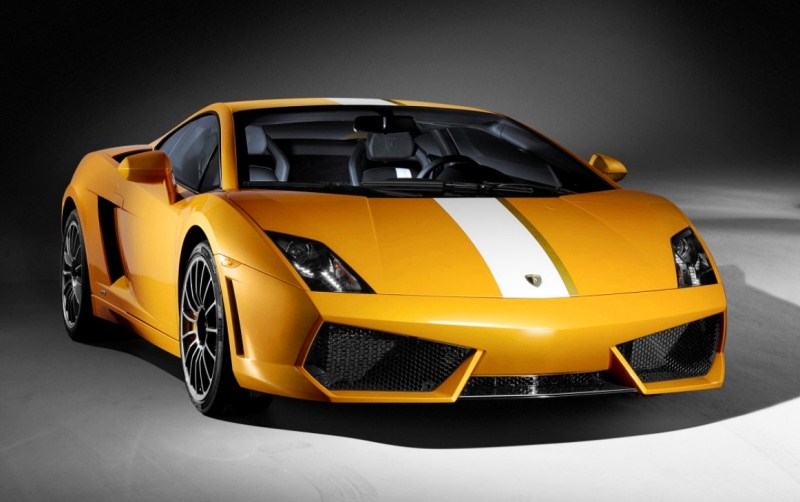
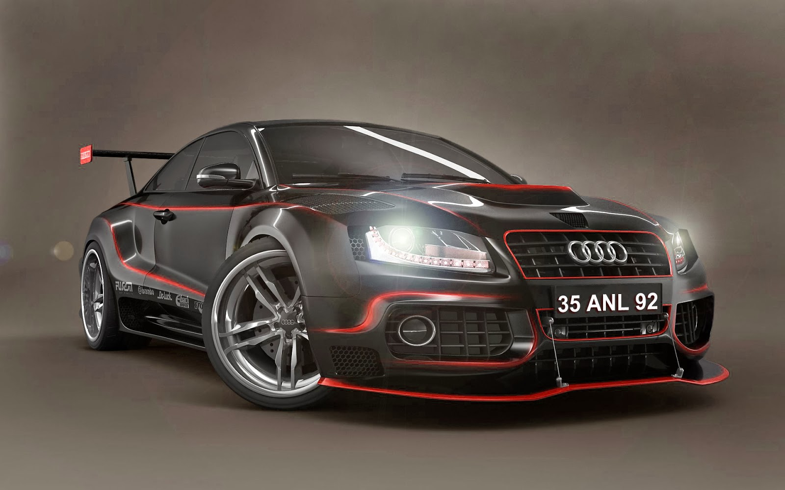

Primer auto
La Fórmula 1, abreviada como F1 y también denominada la «categoría reina del automovilismo»1 o «la máxima categoría del automovilismo»,2 3 es la competición de automovilismo internacional más popular y prestigiosa, superando a categorías de automovilismo como la NASCAR, el Rally, los automóviles de turismo, entre otras.4 A cada carrera se le denomina Gran Premio y el torneo que las agrupa se denomina Campeonato Mundial de Fórmula 1. La entidad que la dirige es la Federación Internacional del Automóvil (FIA). El Formula One Group es controlado por la empresa estadounidense Liberty Media desde septiembre de 2016.

Segundo auto
Los automóviles utilizados son monoplazas con la última tecnología disponible, siempre limitadas por un reglamento técnico; algunas mejoras que fueron desarrolladas en la Fórmula 1 terminaron siendo utilizadas en automóviles comerciales, como el freno de disco.6 La mayoría de los circuitos de carreras donde se celebran los Grandes Premios son autódromos, aunque también se utilizan circuitos callejeros y anteriormente se utilizaron circuitos ruteros.

Tercer auto
El inicio de la Fórmula 1 moderna se remonta al año 1950, en el que participaron escuderías como Ferrari, Alfa Romeo y Maserati. Algunas fueron reemplazadas por otras nuevas como McLaren, Williams, Lotus y Renault, que se han alzado varias veces con el Campeonato Mundial de Constructores. Las escuderías tienen que planear sus fichajes y renovación de contratos 2 o 3 carreras antes del fin de la temporada. Por su parte, los pilotos deben contar con la superlicencia de la FIA para competir, que se obtiene en base a resultados en otros campeonatos.